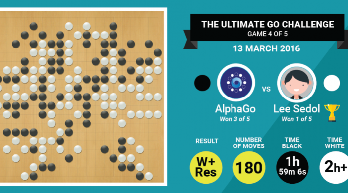
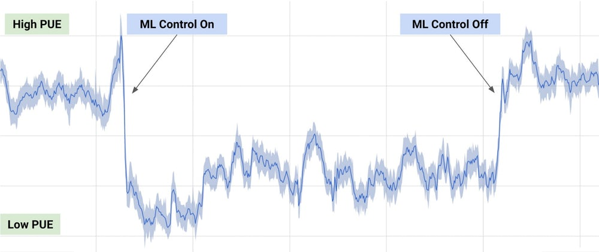

Application
Atari games
En 2013, Deepmind sort un papier intitulé "Playing Atari with Deep Reinforcement Learning", un papier qui fait une sorte de révolution dans le domaine du reinforcement learning. Il s'agit d'un unique algorithme qui apprend seul à jouer à plusieurs jeux Atari sans aucune supervision et sans connaissances préalables de l'environnement . Le modèle a comme unique entrée la capture de l'écran, il connaît néanmoins son score et sait qu'il faut le maximiser.
Le modèle proposé par Deepmind est unique pour plusieurs raison : c'est avant tout un même modèle qui peut jouer à plusieurs jeux différents. C'est aussi l'un des premiers algorithmes qui marient deep learning et reinforcement learning.
L'algorithme commence avec 0 connaissance de l'environnement (ne comprends pas des notions telles que "balle", "arme" ou "ennemi"). Au fur et à mesure, il développe des stratégies de plus en plus abouties et atteint des scores meilleurs que les scores humains.
La vidéo ci-dessous montre l'évolution de l'algorithme au fur et à mesure des itérations.
AlphaGo
AlphaGo est un programme informatique capable de jouer au jeu de go, développé par l'entreprise britannique Google DeepMind.
En octobre 2015, il devient le premier programme à battre un joueur professionnel (le français Fan Hui) sur un "goban" de taille normale (19×19) sans handicap. Il s'agit d'une étape symboliquement forte puisque le programme joueur de go est alors un défi complexe de l'intelligence artificielle. En mars 2016, il bat Lee Sedol, un des meilleurs joueurs mondiaux (9e dan professionnel). Le 27 mai 2017, il bat le champion du monde Ke Jie et sa retraite est annoncée.
L'algorithme d'AlphaGo combine des techniques d'apprentissage automatique et d'exploration par Monte Carlo, associées à de nombreux entrainements avec des humains, d'autres ordinateurs, et surtout lui-même.
Cet algorithme sera encore amélioré dans les versions suivantes. AlphaGo Zero en octobre 2017 atteindra un niveau supérieur en jouant uniquement contre lui-même. AlphaZero en décembre 2017 surpassera largement, toujours par auto-apprentissage, le niveau de tous les joueurs humains et logiciels, non seulement au jeu de Go, mais aussi aux échecs et au Shōgi.

Résultat de la partie opposant Alphago à Lee Sedol
Google Cooling System
L'utilisation de Gmail, de YouTube, de la recherche Google ainsi que du reste des services google consomme énormément d'énergie et, bien que Google ait beaucoup investi pour rendre ses serveurs, ses systèmes de refroidissement et ses sources d'énergie aussi efficaces et écologiques que possible, des améliorations sont toujours possibles. Surtout lorsque les systèmes de refroidissement à l'échelle industrielle sont difficiles à gérer efficacement, étant donné les interactions complexes qui se produisent entre l'équipement, l'environnement et le personnel d'un centre de données.
Pour tenir compte de tous ces facteurs que l'opérateur humain ou l'ingénierie traditionnelle basée sur les formules pourraient manquer, l'équipe a mis DeepMind à travailler sur le problème, et le résultat a été une réduction drastique de la consommation d'énergie pour les systèmes de refroidissement du centre.
L'efficacité a été mesurée par le rapport entre la consommation d'énergie du service informatique et celle de l'ensemble du bâtiment, une mesure connue sous le nom de PUE (Power Usage Effectiveness). Les algorithmes de Deepmind ont été alimentés par les données existantes, y compris la température, la puissance et la vitesse de pompage, puis ont été entraînés par reinforcement learning pour se concentrer sur le futur PUE, tandis que d'autres analysaient les données pour prédire les changements de température et de pression et controler les systèmes de refroidissement en conséquence. Comme le montre le graphique ci-dessous, la consommation d'énergie du centre de données a été réduite de 40%.
